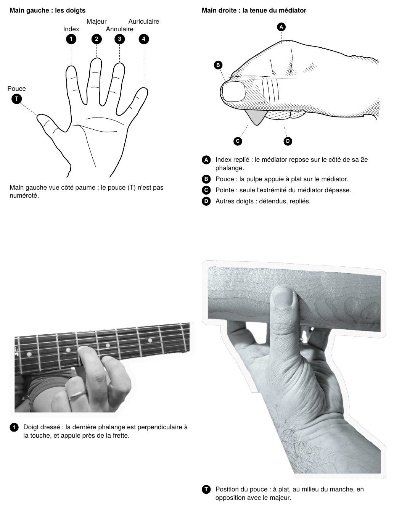

Schémas
Choisis un schéma et une tonalité : il se place tout seul sur le manche. Touche une pastille pour l'entendre.
Jeux au métronome
Toujours en rythme : une mesure de décompte, puis l'appli annonce ce qu'il faut jouer. Commence lentement, n'accélère que quand tout est en place.
Toutes les notes
Les notes du manche, de la corde à vide à la 12e case (l'octave). Touche une note pour l'entendre.
Accordeur
Joue une corde à vide : l'accordeur écoute au micro et indique si la note est trop basse, juste ou trop haute. Le son est analysé sur l'appareil, il n'est jamais enregistré ni envoyé.
Entendre les cordes à vide
Présentation
Les pages de cette appli forment une boîte à outils : des gammes, des modes, des accords et des positions transposables, à utiliser comme référence sur le manche.
Une boîte à outils, pas une méthode
Un schéma seul n'est pas de la musique. Pour que ces outils prennent sens, il faut les relier à de la vraie musique : les entendre, les jouer dans un morceau, les reconnaître à l'oreille.
Comparer, toujours
La gamme majeure et l'accord majeur servent de référence. Les autres gammes et modes utilisent les mêmes intervalles, avec d'éventuelles altérations. S'entraîner à visualiser et à entendre ces différences est ce qui les rend vraiment utiles.
Écouter, jouer, analyser
Pour assimiler pleinement une gamme ou un accord, il est utile d'entraîner son oreille à le reconnaître, et de prendre le temps de l'analyser : d'où vient-il, sur quel accord sonne-t-il, pourquoi fonctionne-t-il ici.
Un pas après l'autre
Il n'est pas utile de chercher à tout apprendre d'un coup. Mieux vaut approfondir peu de choses que survoler beaucoup de pages.
Se faire accompagner
Ces fiches sont un support, pas un substitut à un professeur : n'hésite pas à solliciter son aide pour les mettre en pratique et corriger ce qui doit l'être.
Tout ne se vaut pas
Certaines positions et certaines gammes sont beaucoup plus utiles et plus courantes que d'autres. Cette boîte à outils n'est pas exhaustive : le choix a été fait de ne garder que les positions les plus usuelles et les plus abordables.
Toujours avec le métronome
Les jeux font travailler les schémas en rythme. Commence au tempo lent, et n'accélère que lorsque tout est joué proprement et en place.
Les mains : doigts et médiator
Main gauche : les doigts sont numérotés de 1 (index) à 4 (auriculaire) ; ce sont les numéros écrits sous les cases dans les premiers schémas de gammes.
